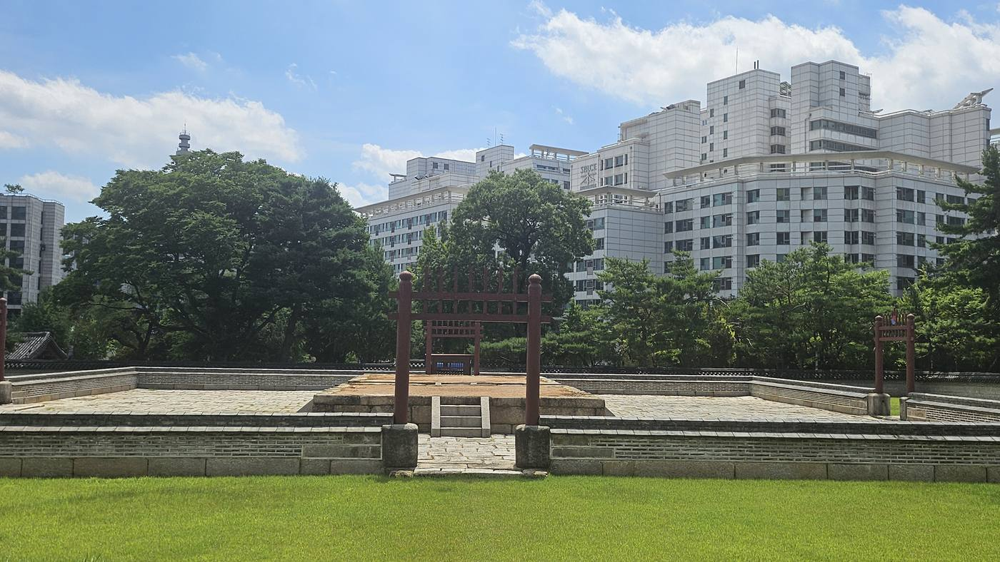
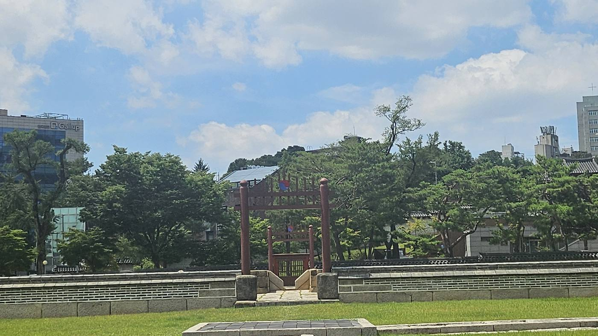
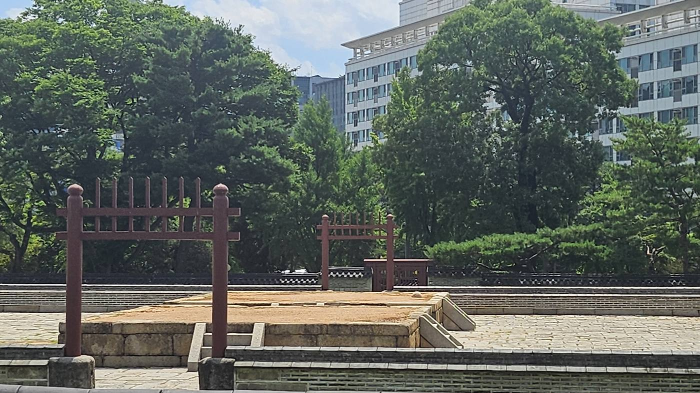
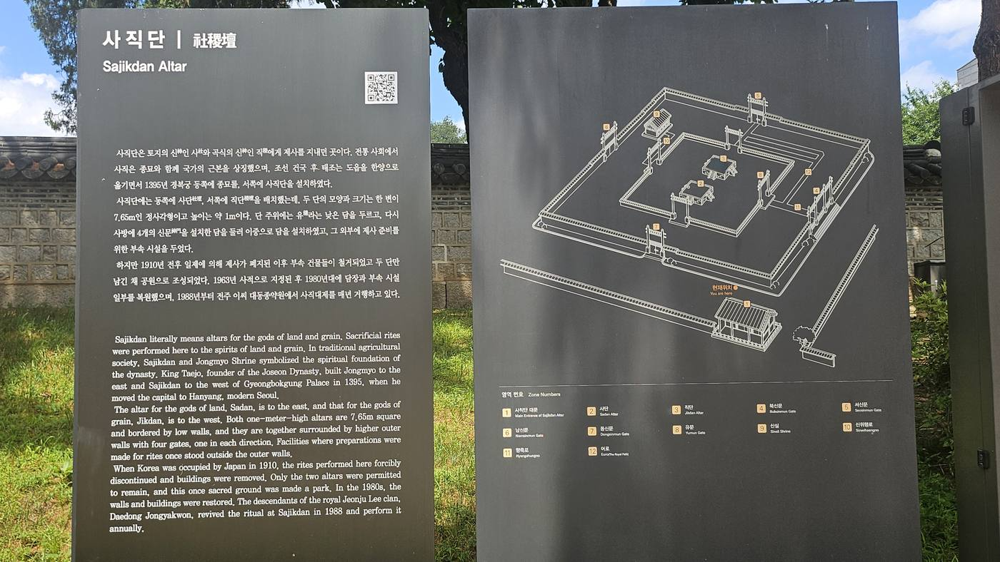
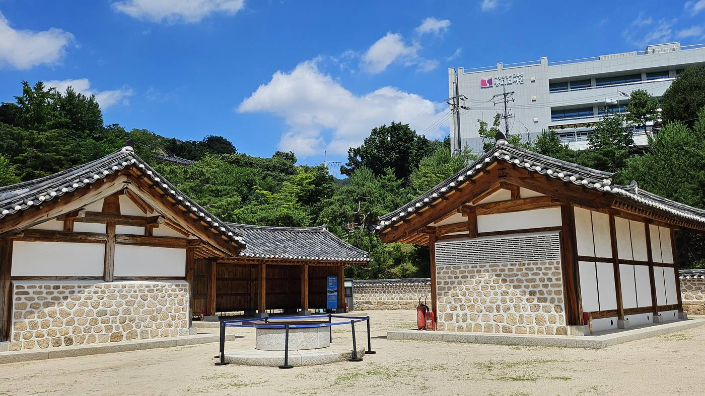
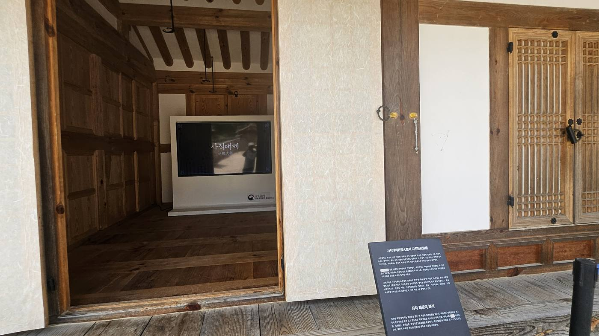
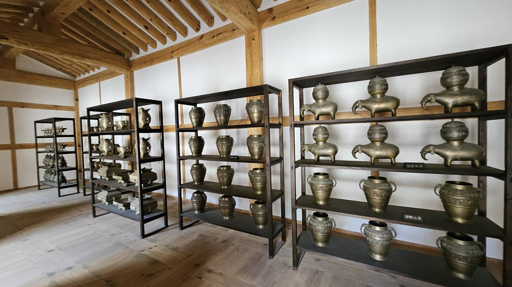
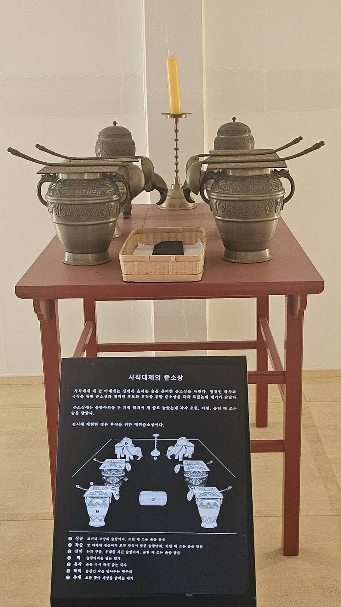
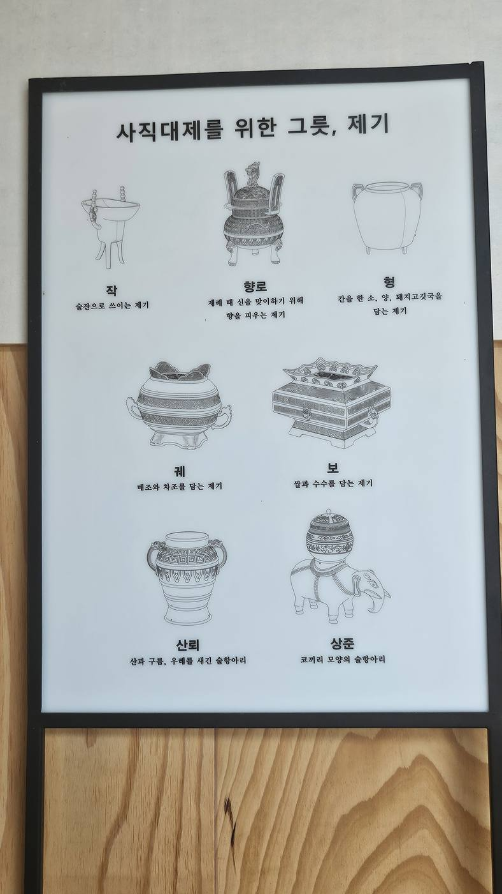

종묘에서 이미 확인한 원칙이 있다. 《주례》의 "좌묘우사(左廟右社)" — 임금이 남쪽을 보고 앉았을 때, 왼쪽(동쪽)엔 조상의 사당을, 오른쪽(서쪽)엔 토지와 곡식의 신을 모신 제단을 두라는 규정이다. 종묘가 그 왼쪽 절반이었다면, 사직단은 나머지 절반이다. 이성계가 나라를 세우고 가장 먼저 챙긴 두 가지 중 하나 — 조상이 아니라 백성의 밥상이다.
종묘의 반대편 — 왜 사직인가
태조 3년(1394) 한양으로 도읍을 옮기자마자, 이성계는 종묘와 함께 사직단 조성도 지시했다. 두 시설은 완공 시점도 거의 겹친다 — 경복궁이 완공된 1395년, 사직단도 함께 모습을 갖췄다. 종묘가 경복궁 동쪽에, 사직단이 서쪽에 자리 잡은 것은 우연이 아니라 《주례》의 규정을 문자 그대로 따른 결과다.
종묘가 "나는 정통한 혈통에서 나온 왕이다"라는 선언이었다면, 사직단은 다른 종류의 선언이다. "나는 백성의 땅과 곡식을 책임지는 왕이다." 조상에게 바치는 제사와 백성의 밥상을 책임지는 제사 — 이 둘을 합쳐 부르는 말이 '종묘사직(宗廟社稷)'이다. 사극에서 신하들이 "종묘사직을 보존하소서"라고 외칠 때, 그 네 글자는 왕실의 정통성과 백성의 생존을 한데 묶어 '국가' 그 자체를 가리키는 말이었다.
경복궁은 왕의 집이다. 그러나 종묘와 사직은 나라의 집이다. 태조는 자신의 집보다 나라의 집을 먼저 세웠다.
— 사직단 답사의 핵심 문장이성계는 평생을 전장에서 보낸 무장 출신이다. 백성이 굶주리면 왕조가 얼마나 쉽게 흔들리는지, 누구보다 몸으로 알고 있던 사람이었다. 그가 종묘 못지않게 사직단 조성을 서두른 이유를 무장 출신 왕의 정치적 감각으로 읽는 해석도 있다 — 다만 이 부분은 사료가 직접 남긴 이성계의 육성이 아니라, 그의 행보에서 후대가 읽어낸 해석이라는 점은 분명히 해두어야 한다.
답사 동선 — 대문에서 제단까지
서울 종로구 사직동, 지하철 3호선 사직역에서 도보 5분. 사직공원 안쪽으로 들어서면 낮은 담장(유·壝)으로 둘러싸인 네모난 돌 제단이 보인다. 오늘날 이 일대는 '사직공원'이라는 이름 때문에 그저 동네 공원처럼 여겨지기 쉽지만, 원래는 국가 최고 등급의 제사가 열리던 신성 구역이었다.

조금 더 물러나 보면 사직단이 도심 한복판에 얼마나 깊숙이 파묻혀 있는지 실감된다. 600년 전 국가 최고 제단이었던 자리가, 지금은 여론조사기관 건물과 오피스 타워 사이에 끼어 있다.

사단과 직단 — 네모난 제단 두 기

사직단은 이름 그대로 두 제단의 합이다. 동쪽에 놓인 것이 토지의 신에게 제사 지내는 사단(社壇), 서쪽에 놓인 것이 곡식의 신에게 제사 지내는 직단(稷壇)이다. 현장 안내판에 따르면 두 단은 모양과 크기가 동일한 정사각형으로, 한 변이 7.65미터이고 높이는 약 1미터다. 원 모양이 아니라 네모 모양으로 지은 데는 이유가 있다. 하늘에 제사 지내는 원구단(圜丘壇)이 둥근 형태였던 것과 달리, 땅과 곡식에 바치는 제단은 네모나야 한다는 오래된 관념이 있었다 — "하늘은 둥글고 땅은 네모나다(天圓地方)"는 동아시아의 우주관이 제단의 생김새에까지 반영된 셈이다.
단 주위로는 유(壝)라는 낮은 담을 둘렀고, 그 바깥으로 사방에 신문을 낸 담을 다시 둘러 이중 구조를 만들었다. 그 바깥에는 제사 준비를 위한 부속 시설이 있었다. 지금 우리가 보는 것은 그 전체 구조 가운데 복원된 일부다.

보물 제177호 대문 — 불타고, 다시 지어진 문
사직단의 정문은 보물 제177호로 지정돼 있다. 겉모습은 앞면 3칸, 옆면 2칸의 소박한 맞배지붕 건물이라 얼핏 지나치기 쉽지만, 이 문에는 정정해야 할 이야기 하나가 딸려 있다.
이 대문이 "임진왜란 때도 불타지 않고 살아남았다"는 이야기가 종종 전해지는데, 문화재청 공식 기록은 정반대다. 대문은 태조 3년(1394) 사직단을 지을 때 함께 세워졌지만, 임진왜란 때 다른 전각들과 마찬가지로 불에 탔다. 지금 서 있는 건물은 그 이후에 다시 지어진 것이다. 정확한 재건 연도는 알려져 있지 않지만, 숙종 46년(1720) "큰바람에 기울어진 것을 다시 세웠다"는 실록 기록으로 미루어, 그보다 앞선 시기 — 임진왜란 이후 어느 시점 — 에 재건된 것으로 추정한다.
지금 이 문이 서 있는 자리도 원래 자리가 아니다. 1962년 서울시 도시계획에 따라 원래 위치보다 14미터 뒤쪽으로 옮겨졌다. 그러니까 이 대문은 두 번 자리를 지켜낸 게 아니라, 한 번 불타 없어졌다가 다시 세워졌고, 다시 한번 통째로 밀려난 문이다. "전쟁도 버텨낸 문"이라는 서사보다, "불타고 밀려나면서도 결국 이 자리에 남은 문"이라는 서사가 사실에 더 가깝고, 어떤 의미에서는 더 곡진하다.
전사청 — 제사 음식을 짓던 자리
사직단 경내 한쪽에는 전사청(典祀廳) 일원이 복원돼 있다. 제례에 쓸 음식을 준비하던 구역이다. 전사관이 제수를 점검하던 전사청 본채, 제기를 보관하던 제기고, 온갖 기물을 두던 잡물고, 희생으로 쓸 소·양·돼지를 잡던 재생정, 음식을 두던 찬만대, 일하는 사람들이 머물던 수복방과 저구가(방아를 찧던 곳), 그리고 우물까지 — 일제강점기를 거치며 이 시설들은 모두 철거되고 공원 부지로 쓰이다가, 2021년에야 다시 복원됐다.

전사청 내부에는 사직대제(社稷大祭)를 소개하는 영상이 상영되고 있었다. 국가유산청이 제작한 영상으로, 제례의 전체 흐름을 간략히 보여준다.

제기(祭器) — 왕이 직접 무릎 꿇었던 상차림
전사청 전시실에는 실제 사직대제에 쓰이는 제기들이 진열돼 있다. 술을 담는 코끼리 모양 술항아리 상준(象尊), 향을 피우는 향로, 곡식을 담는 궤(簋)와 보(簠), 고깃국을 담는 형(鉶) 등 — 종류마다 담는 내용물과 용도가 정해져 있다.



제사상 차림도 재현돼 있었다. '后稷氏之神(후직씨지신)' — 곡식의 신 후직의 위패 앞에, 정해진 격식대로 그릇들이 놓인다. 대나무 그릇 변(籩)에는 마른 음식을, 나무 그릇 두(豆)에는 젖은 음식을 담아 좌우로 각 12개씩 대칭 배치하고, 그 가운데 곡식을 담은 보(簠)와 궤(簋), 소·양·돼지 고깃국을 담은 형(鉶) 세 개가 놓인다.

한 나라의 왕이 일 년에 여러 차례, 특히 가뭄이 심할 때는 직접 이 자리에 나와 절을 올렸다. 종묘에서 왕이 조상 앞에 무릎을 꿇었듯, 사직단에서는 토지와 곡식의 신 앞에 무릎을 꿇었다. 이 상차림 하나하나가, 왕이 백성의 밥상 앞에서 스스로를 낮췄던 흔적이다.
공원이 된 제단 — 일제강점기의 수난과 복원
사직단은 조선 왕조 내내 국가 최고 등급의 제사 공간이었다. 그러나 1910년을 전후해 일제가 제사를 강제로 폐지하면서, 부속 건물들이 철거되고 두 개의 제단만 남긴 채 공원으로 격하됐다. '사직공원'이라는 이름 자체가 이 격하의 흔적이다. 국가가 하늘과 백성에게 제사를 올리던 신성 구역이, 산책하는 공원으로 이름이 바뀐 것이다.
1963년 사적으로 지정되면서 회복이 시작됐다. 1980년대에 담장과 부속 시설 일부가 복원됐고, 1988년부터는 전주 이씨 대동종약원이 사직대제를 매년 다시 거행하고 있다. 전사청 일원은 그보다 한참 뒤인 2021년에야 복원됐다. 조선을 세운 이가 가장 먼저 지은 두 시설 중 하나가, 100년 넘게 걸려서야 조금씩 제 모습을 되찾고 있는 셈이다.
종묘와 사직이 없으면 궁궐은 그냥 큰 집일 뿐이다. 반대로 종묘와 사직이 있으면, 왕이 없어도 나라는 이어질 수 있다.
— 종묘사직이라는 말의 무게왕의 집보다 먼저 지은 나라의 집
종묘에서 이성계는 "나는 정통한 혈통에서 나온 왕"이라고 선언했다. 사직단에서는 "나는 백성의 땅과 곡식을 책임지는 왕"이라고 선언했다. 두 선언을 합친 말이 '종묘사직' — 곧 국가 그 자체를 가리키는 말이 됐다. 종묘가 하늘과 조상 앞에서의 정통성을 세우는 자리였다면, 사직단은 매년 왕이 직접 나와 백성의 밥상 앞에 무릎을 꿇던 자리였다.
경복궁은 왕의 집이다. 종묘와 사직은 나라의 집이다. 이성계는 자신이 살 집보다, 나라가 서 있을 두 개의 집을 먼저 지었다. 지금은 도심 한복판 공원 안, 낮은 담장에 둘러싸인 네모난 돌 제단 두 기로 남아 있지만, 그 자리가 품고 있던 무게는 궁궐 못지않았다.
조상과 토지를 모셨다. 이제 마지막으로 왕이 머물 궁궐을 세울 차례였다. 그렇게 경복궁이 시작된다.
답사 정보 / Visitor Info
- 위치
- 서울 종로구 사직동 (사직공원 내, 지하철 3호선 사직역 1번 출구 도보 5분)
- 입장
- 무료 · 상시 개방
- 소요
- 사직단·전사청 일원 약 30~40분
- 지정
- 사직단 — 사적 · 사직단 대문 — 보물 제177호
- 제례
- 사직대제 — 매년 전주 이씨 대동종약원 주관으로 거행 (1988년부터 복원)
- 연계
- 종묘 (약 3km) — 좌묘우사, 나라의 두 집을 함께 답사하는 코스